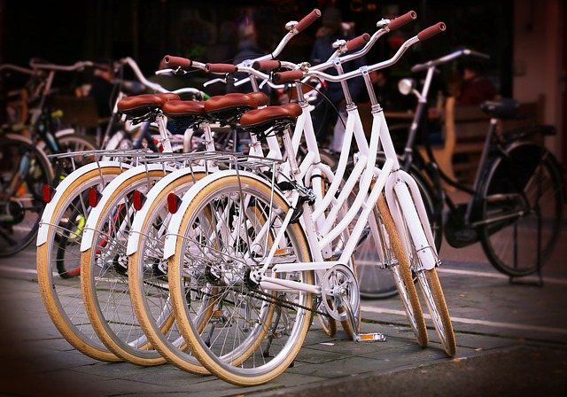

Why waiste time on a main stream bus-tour?
Try our eco-friendly alternative instead.
All of our bike tours are perfect for your entire family, group
and couples as well as singles. We have many guides and all our
tours begin at the same place and end at the same place.
It´s easy if mum and dad want a different trip than their
son or daughter. You can all find each other easily after the
bike trip has ended.
All of our guides have to finish a course before they are allowed
to become a guide at Re-cycle. In this way we can have high quality
on both our guides and our tours.
You can try one of those hot, stuffy bus tours, or fight the traffic
in your own car, but if you´re interested in a more intimate,
up-close, healthy and educational way to learn about the city,
why not try something different?
Get ready to tour the city the way it was
meant to be explored.
BY BIKE!